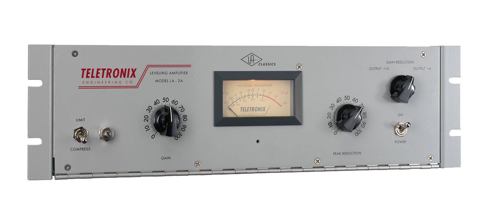
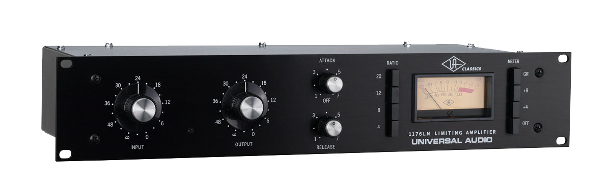
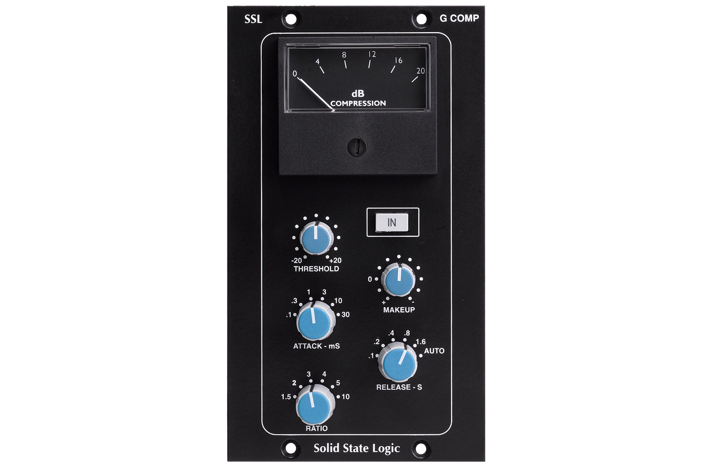

Los compresores se pueden clasificar según la forma como se realice la reducción de ganancia; esta se define por el método electrónico utilizado para este fin. Conociendo de manera básica su funcionamiento, se podrán tener criterios para la selección de un equipamiento adecuado, de acuerdo a las necesidades de un proyecto o el tipo de material sonoro.

EQ III - Avid Technology. Ecualizador parámetrico encontrado en el digirack de Pro Tools
Ópticos o aisladores ópticos
Este tipo de compresores usa una bombilla o LED que aumenta o disminuye su brillo de acuerdo a la señal de audio entrante y una fotocelda que responde de acuerdo a los cambios de intensidad de la bombilla realizando los cambios de ganancia respecto a esto. Los tiempos de ataque y liberación son dependientes del tiempo de respuesta de la bombilla y la fotocelda, y es por estos elementos y sus propiedades que los compresores ópticos se catalogan como “musicales” debido a que la fotocelda tiene una curva de liberación gradual y predecible. Algunos compresores legendarios de este tipo son el Universal Audio® LA2A amplificador nivelador y UREI LA-3.

Universal Audio 1176, Compresor de tipo FET en versión de rack.
FET (Transistor de Efecto de Campo)
El compresor de transistor de efecto de campo usa un transistor especial para la variación de ganancia. Los transistores tipo FET fueron los primeros en emular el comportamiento interno de los tubos de vacío. Los compresores de este tipo tienen tiempos de ataque y liberación muy rápidos, son limpios y confiables. Suelen usarse en voces o baterías donde al tener altos niveles de reducción de ganancia no es agresivo y notorio. Uno de los más legendarios compresores de este tipo es el Universal Audio® 1176.

Q4 Paragraphic Equalizer - Waves Audio. Ecualizador paragráfico de tres bandas, en versión plug-in.
VCA
Trabajan con amplificadores controlados por voltaje que son los más versátiles de todos los tipos de compresores y son los más comunes a la fecha. Los VCA pueden cambiar rápidamente la ganancia en respuesta a diferentes detectores que se apliquen sobre la misma señal. Son la mejor opción cuando se desea tener un control más estricto de la dinámica y nivel de la señal. Puede ser sutil como otro tipo de compresores o agresivo si se desea. Algunos ejemplos de compresores tipo VCA son el Solid State Logic Buss Compressor o el dBX 160.
Los compresores de Mu variable son un diseño antiguo del control de ganancia en un dispositivo usando un tubo de vacío como elemento de control de la ganancia. Este tipo de compresores no poseen un control de ratio tradicional, pues normalmente cuando se realizan reducciones de ganancia pequeñas se tiene una relación de reducción de ganancia baja y suavizada, y a medida que se aumenta la señal de entrada está relación se vuelve más agresiva
Técnicas de compresión y su aplicación
Aunque no se conocen técnicas estandarizadas de compresión si suelen usarse algunos procedimientos de acuerdo a los objetivos que el ingeniero haya planteado. Al mismo tiempo se han dado a conocer algunas técnicas comúnmente usadas por ingenieros en las distintas etapas de una producción musical.
- Modificación de Envolvente: La envolvente de la señal es una de las características que definen el timbre de un instrumento y está compuesto por los tiempos de ataque, decaimiento, sostenimiento y release (ADSR). Estos tiempos no están directamente relacionados con los controles que posee un compresor, pero si pueden indicar como configurar un compresor de acuerdo al objetivo que se haya planteado.
- Compresión de picos de la señal:
En algunos casos este tipo de compresión se usa como un dispositivo de control o para disminuir los cambios de nivel entre los niveles bajos y altos. Esto es posible de lograr usando tiempos de attack y release rápidos, una relación entre nivel de entrada - salida alto y un nivel de umbral que este por debajo de los niveles pico que se deseen reducir.
- Compresión en serie:
De acuerdo a los objetivos de mezcla que el ingeniero se proponga se presentan casos donde se hace necesario usar más de un compresor, debido a que no es posible lograr lo que ha propuesto usando una sola configuración. En algunos casos puede ser útil usar compresores de audio que realicen pequeñas reducciones de ganancia que un compresor grandes reducciones de ganancia.
- Compresión en paralelo:
Es una combinación entre una señal procesada y una sin procesar, todo depende del tipo de configuración que se establezca en el procesador.
- El compresor como un limitador:
Un caso extremo de un compresor es el limitador, que no es más que un compresor con un ratio de infinito a uno, es decir que cualquier señal que supere el nivel de umbral establecido será reducido. Lo más normal es encontrar limitadores con tiempos reacción rápidos, con el fin de evitar que el nivel de la señal de salida sobrepase el umbral establecido. Es uno de los procesos más usados en la etapa de masterización, permitiendo lograr altos niveles de RMS sin saturar los sistemas y controlar el nivel de la señal de salida.
- Compresión Multibanda:
Los compresores multibanda se basan en el mismo funcionamiento de cualquier compresor, pero se aplica el proceso en diferentes bandas con configuraciones independientes para cada banda.
- De-esser:
Es similar a los compresores multibanda, solo que solo actúa sobre un rango de frecuencias altas con el fin de reducir el sonido de las "S" en los elementos vocales de un proyecto. También pueden ser usados en instrumentos que tengan contenido en alta frecuencia que pueda ser molesto y que no esté presente todo el tiempo, por ejemplo, en una batería cuando el ejecutante toca un platillo que produce algún contenido en frecuencias altas exagerado, este puede ser controlado mediante este tipo de compresores para que la reducción de ganancia solo se aplique cuando el nivel de estas frecuencias sobrepase el umbral establecido.